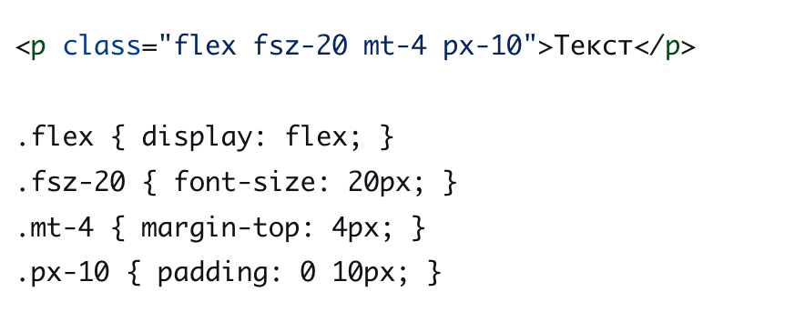
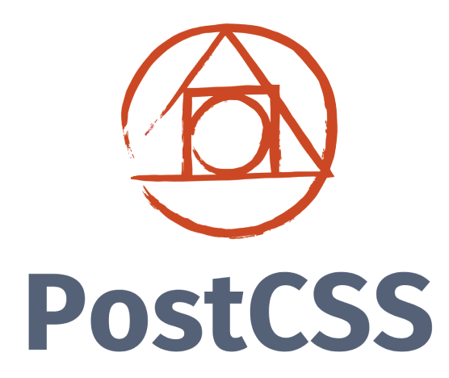
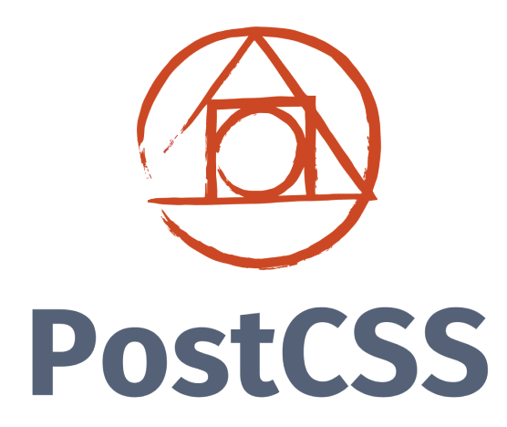

Роман Дмитерко

- Фронтенд-разработчик в hh.ru
- Занимаюсь web-разработкой с 2012 года
Лекция
🔇 Отключите микрофоны
🔉 Не забывайте включать микрофон, когда задаете вопрос
🔉 Не стеснятйтесь задавать вопросы
😉 По возможности включайте камеры
Язык разметки документов, который определяет, какие элементы
должны располагаться на веб-странице и каким образом.
Был разработан Тимом Бернерсом-Ли приблизительно в 1986—1991 годах на основе SGML, а первая в истории страница появилась в сети CERN

Позволяют изменять свойства и поведение элемента,
для которого они заданы
Указывает версию спецификации HTML, которой соответствует документ. Сегодня он нужен только для того, чтобы браузер не переключался в режим совместимости.
Единственный актуальный doctype - <!DOCTYPE html>
<!DOCTYPE HTML PUBLIC "-//W3C//DTD HTML 3.2 Final//EN">
<!DOCTYPE HTML PUBLIC "-//W3C//DTD HTML 4.01 Transitional//EN" "http://www.w3.org/TR/html4/loose.dtd">
<!DOCTYPE html PUBLIC "-//W3C//DTD XHTML 1.0 Strict//EN" "http://www.w3.org/TR/xhtml1/DTD/xhtml1-strict.dtd">
<html></html> - контейнер для всего документа. Имеет атрибут lang, который позволит браузеру понять как отображать контент
<head></head> - метаданные страницы: заголовок, иконка, стили, скрипты, информация для шаринга
<body></body> - содержит весь контент, который появится на странице: текст, изображения, теги.
Cmd + Alt + I или F12Ctrl + Shift + I или F12

Нельзя вкладывать блочные теги в строчные.
В строчно-блочные - можно
В общем случае - использование тегов по назначению:
для кнопки - button, для таблиц - table, заголовков - h1-h6
Более подробно на doka.guide
— появившийся в 1996 году, формат описания визуальных стилей, который позволяет применять визуальный стиль к элементам структурированных документов (например, документам HTML и XML)
Браузер загружает вcе стили, описанные на странице и применяет их "сверху-вниз", добавляя или заменяя свойства элемента

<link rel="stylesheet" href="styles/main.css"><style> .class {...} </style><div style="width: 100px;" height=
"200px">color, font, letter-spacing, line-height, list-style, text-align, text-indent, text-transform, visibility, white-space и word-spacing
background, border, display, float и clear, height и width, margin, min-max-height и -width, outline, overflow, padding, position, text-decoration, vertical-align и z-index
| Селектор | Вес |
|---|---|
| тег, псевдо-элемент(span, ::after) | 0 0 0 1 |
| класс, псевдокласс, атрибут (.header, :hover) | 0 0 1 0 |
| идентификатор (#footer) | 0 1 0 0 |
| инлайн-стили (style="color: red;") | 1 0 0 0 |
.text #name div.red.small { ... }
Стараться использовать только селекторы классов
.text #name div.red.small { ... } ->
.specific-element { ... }
Проблема: сложно придумывать уникальные названия css-классов
Статья на CSS Tricks
Компонентный подход к верстке. В его основе лежит принцип разделения интерфейса на независимые блоки

.header, .logo, .main-menu
.red-text.error

.имя-блока__имя-элемента, например
.main-menu__item

.имя-блока_имя-модификатора или .имя-блока__имя-элемента_имя-модификатора.main-menu__item_active
Каждый css-класс меняет только одно свойство стилей
Яркий пример - Tailwind CSS
box-sizing: <'border-box' || 'context-box'>
border: <ширина в px> <solid || dotted || dashed> <цвет>
margin -top, -right, -bottom, -left: <px || em || rem>
padding -top, -right, -bottom, -left: <px || em || rem>
static - по умолчаниюrelative - отступ от того места, где элемент должен быть отрисованabsolute - позиция внутри ближайшего родителя с relative или absolutefixed - позиция внутри документаsticky - позиция, меняющаяся при скролле родителя
none - элемент не отображаетсяblock - блочный элементinline - строчный(инлайн) элементinline-block - блочно-строчный элементflex - ?grid - ??Похожи на flexbox, но работают с двумя осями сразу
и позволяют описать сетку
Можно сравнить с таблицами
@keyframes <название анимации> {
from {
/* css-свойства в первом кадре */
width: 50px;
}
to {
/* css-свойства в последнем кадре */
width: 200px;
}
}
.circle {
animation-name: circle-to-square; // название анимации
animation-duration: 5s; // продолжительность
animation-iteration-count: infinite; // кол-во повторений
animation-timing-function: linear // функция скорости анимации
}


CSS правила, которые позволяют применять разные CSS-стили, для разных устройств по типу отображения (например: для принтера или монитора), или для конкретных характеристик устройства (например: ширины окна просмотра, ориентация устройства)
@media screen and (max-width: 480px) {
.block {
background-color: #2196f3;
color: #fff;
}
...
}
.header {
...
}
.promo-carousel {
...
}
@media (min-width: 480px){
.header {
...
}
.promo-carousel {
...
}
}
@media (min-width: 1000px) { ... }– это надстройка над CSS, которая добавляет новые возможности в синтаксис CSS и на выходе генерирует CSS код.
– функция, которая позволяет изменять CSS с помощью JavaScript на основе его синтаксического дерева и добавлять для этого пользовательские плагины
 ➡️
➡️
 ➡️

➡️
➡️

➡️
<link rel="stylesheet/less" type="text/css" href="styles.less" /><script src="//cdn.jsdelivr.net/npm/less" ></script>
npm install -g lesslessc styles.less styles.css